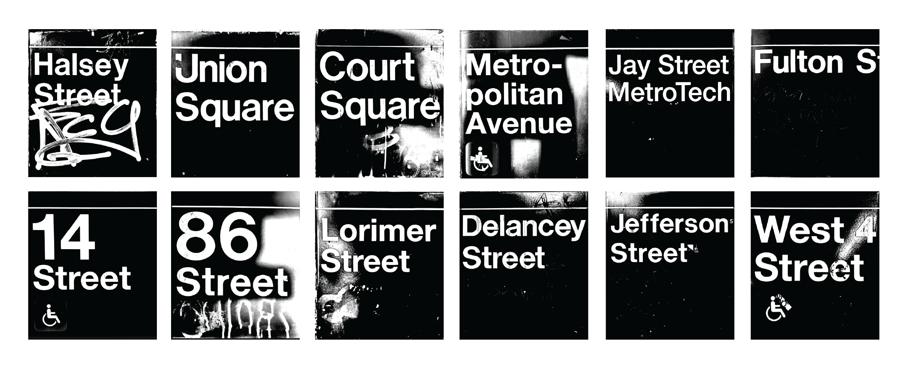
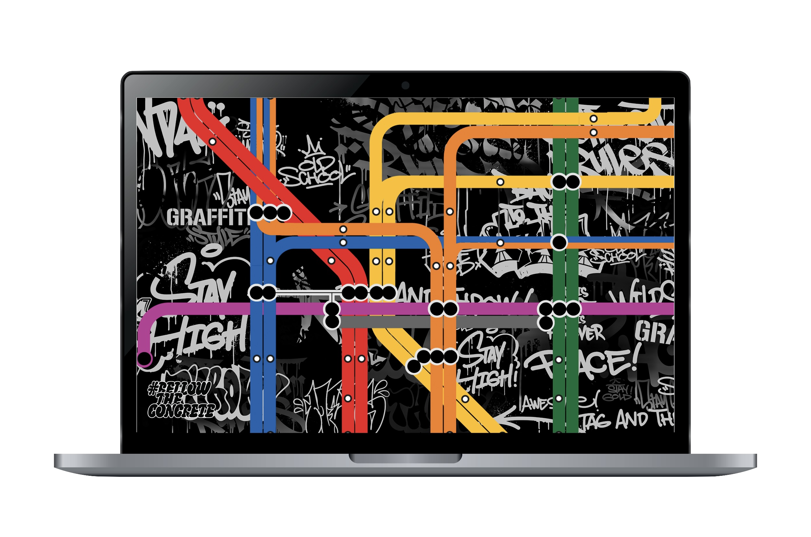
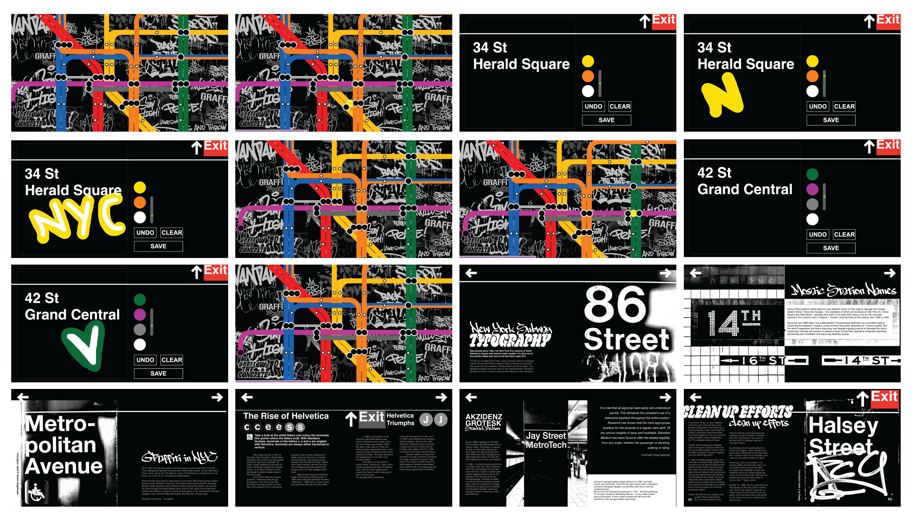

Canvas Bellow the Concrete
Using the visual language of NYC subway and graffiti culture I developed this conceptual publication, reframing subway signage and structural elements as hidden canvases for artistic expression. The project encourages New Yorkers to reconsider the subway as both functional infrastructure and creative surface.
Designed in the format and scale of a square subway sign, the book uses a black-and-white palette, bold graffiti-inspired typography, and a continuous white line to maintain visual consistency. Structured in three parts—subway typography, graffiti culture, and blank sign layouts—the publication concludes with interactive pages that invite readers to draw directly onto them, transforming the book itself into a canvas.
Intial Inspiration photos


#bellowtheconcrete
For the second part of this project, I expanded the theme of graffiti in the NYC subway into a digital form. I coded an interactive website featuring a map where each station transfer leads to a drawing-pad page. The station name becomes the canvas, and its transfer lines function as the colors used to draw. I gathered station names, locations, and transfer data to build a scrollable map where users can navigate and click through different stops. Scrolling and hover features reference the motion of trains and the blinking rhythm of subway stops.
Using the possibilities of a digital platform, I created hundreds of unique, accessible pages, each offering a different starting point for expression. The project encourages users to create their own pieces using the subway as a canvas, celebrating art and self-expression in the city.
Click this clip to experiece #bellowtheconcrete!
Pages
